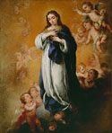

Codification
of the Iconography for The
Immaculate Conception (1649)


Bartolomé Esteban Murillo
Virgin of the Immaculate Conception
About 1670
Oil on Canvas
H 54 x W 46 in.
The Nelson-Atkins Museum of Art,
Kansas City, Missouri,
Purchase: Nelson Trust
Castiglione did not follow Pacheco's treatise on The Immaculate Conception.
In many ways, the painting seems based more on "The Assumption
of the Virgin," where she is rising up to heaven with outstretched
arms as she is greeted into heaven by putti and angels. The Spanish
painter Murillo closely follows the tenets laid out by Pacheco.